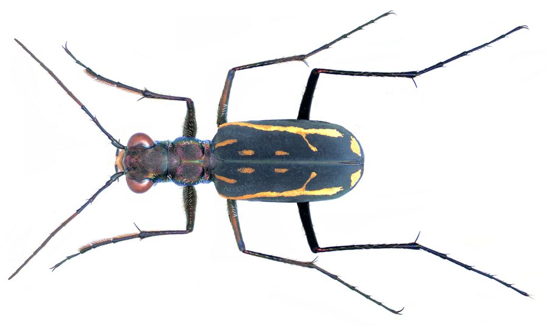

धारीदार बाघ भृंगStriolate Tiger Beetle
Lophyra striolata · Carabidae · INS-0239

- Scientific name वैज्ञानिक नाम
- Lophyra striolata (Illiger, 1800)
- Family कुल
- Carabidae
- Hindi हिंदी
- धारीदार बाघ भृंग
- Local names स्थानीय नाम
- striolate tiger beetle, dharidar bagh bhrung, lophyra striolata, striolate tiger beetle
- Status here यहाँ की स्थिति
- native
- Movement आवागमन
- Resident, here all year
- Known from कहाँ दर्ज
- Others have published records from the wider Awadh–Purvanchal plain, none yet from Basti–Ayodhya अवध–पूर्वांचल से दूसरों के प्रकाशित अभिलेख, बस्ती–अयोध्या से अभी नहीं
- IUCN IUCN
- not evaluated
- Review समीक्षा
- not yet reviewed
When to look कब देखें
Present all year. साल भर मौजूद।
Tell it apart from इनसे अलग पहचानें
धारीदार बाघ भृंग / Striolate Tiger Beetle
Lophyra striolata (Illiger, 1800) — Carabidae
धारीदार बाघ भृंग — नदियों के रेतीले किनारों और तटवर्ती रास्तों पर पाया जाने वाला एक छोटा और अत्यंत चपल शिकारी भृंग। इसके पंखों पर बारीक कत्थई और सफेद लहरदार लकीरों का बहुत सुंदर जाल बना होता है, जिससे यह रेत और कंकड़ों के बीच बिल्कुल छिप जाता है। यह धूप में बहुत तेजी से दौड़ता है और उड़कर आगे बढ़ता रहता है।
Quick Identification त्वरित पहचान
| Feature | Description |
|---|---|
| Habit | Small, extremely agile tiger beetle inhabiting sandy and gravelly shores |
| Coloration | Dark bronze or greenish-bronze with coppery reflections |
| Elytral pattern | Intricately marked with thin, wavy whitish lines and marginal lunules |
| Labrum | Pale yellowish, transverse with a small central tooth |
| Locomotion | Rapid sprinting combined with frequent low buzzing flights over sand |
Field tip: Look along sandy banks of rivers and canal towpaths on sunny mornings, watching for small bronze beetles that run and fly ahead as you walk.
हिंदी — कैसे पहचानें: कत्थई-तांबई पंखों पर बारीक सफेद लहरदार धारियां, छोटा आकार, और रेत पर बहुत फुर्ती से दौड़ना।
Morphology आकारिकी
Adult description: A small, slender tiger beetle. Head metallic bronze or coppery-green, finely striate between the large protruding eyes; labrum pale yellow, short and transverse with small dark apical teeth. Mandibles elongate, strongly curved, pale testaceous externally with sharp internal teeth. Pronotum slightly narrower than head, subquadrate, transversely rugulose with metallic lustre.
Elytra: Oblong, densely punctate-granulate, coppery-bronze to greenish-bronze. Ornamented with an intricate pattern of narrow ivory-white markings: a humeral lunule, a thin median band that extends obliquely and loops longitudinally towards the suture, and a fine apical lunule.
Venter & Appendages: Beneath metallic greenish-blue, densely clothed laterally with white pubescence; legs long, slender, and coppery with spinose tarsi.
हिंदी: इसके पंखों पर बारीक सफेद धारियों की सुंदर नक्काशी होती है। इसकी आंखें बड़ी और गोल उभरी होती हैं।
Behaviour & Ecology व्यवहार और पारिस्थितिकी
Lophyra striolata is diurnal and heliophilous. It becomes active when the sun heats the ground, running in swift darting sprints over sand.
Its intricate markings provide excellent background matching against mixed sand, pebbles, and dried river debris. When alarmed, it takes wing instantly with a soft buzzing sound, flying several metres before settling onto the sand facing the observer.
Larvae dwell in vertical burrows in damp sandy loam along riverbanks, waiting at the burrow mouth to seize passing small ants and flies.
हिंदी: यह कीड़ा तेज धूप में रेत पर शिकार ढूंढता है। इसके पंखों की धारियां रेत और कंकड़ में इसे छिपाए रखती हैं। खतरा होने पर यह तेजी से उड़कर भागता है।
Life Cycle / Phenology जीवन चक्र
| Season / Month | Stage & Activity |
|---|---|
| April–May (Summer) | Adults emerge as sandy river shores warm under spring sunshine |
| June–July (Monsoon) | Mating and egg-laying in moist sand along river and canal borders |
| August–September | Larvae feed and develop in vertical burrows along elevated sandbars |
| October–November | Larvae complete development; some adults remain active through autumn |
| December–March (Winter) | Overwintering primarily as mature larvae in sealed burrows |
Univoltine across northern Indian river systems, with peak adult abundance occurring from pre-monsoon through the monsoon months.
हिंदी: गर्मियों में यह बाहर निकलता है और बरसात में रेत में अंडे देता है। इसके बच्चे रेत के अंदर बिल बनाकर रहते हैं और जाड़े में जमीन के अंदर विश्राम करते हैं।
Host Plants or Prey आहार
- Adult Prey: Small cursorial insects including small flies, ants, leafhoppers, and springtails.
- Larval Prey: Ants, small beetles, and soft-bodied invertebrates walking near the burrow entrance.
- Vegetative Associations: Strictly non-herbivorous; relies on riverine grasses solely for shelter.
हिंदी: यह पूरी तरह मांसाहारी कीट है जो रेत पर चलने वाले छोटे कीड़ों और मक्खियों को खाता है।
Predators / Natural Enemies शत्रु
- Birds: Wagtails, sandpipers, plovers, and Black Drongo prey on adults on sandbars.
- Invertebrates: Asilid robber flies take flying adults; wolf spiders ambush beetles on ground.
- Parasitoids: Tiphiid wasps parasitize grubs in sandy burrows.
हिंदी: नदी किनारे की चिड़ियां, शिकारी मक्खियां और मकड़ियां इसका शिकार करती हैं।
Agricultural / Human Relevance कृषि प्रासंगिकता
- Beneficial predator: Naturally suppresses small insect populations along riverbanks and riparian fields.
- Bioindicator: Sensitive to sand mining and bank degradation along river corridors.
- Harmless: Completely harmless to crops and humans.
हिंदी: यह नदी किनारे हानिकारक कीड़ों को खाकर पर्यावरण का संतुलन बनाए रखता है। यह फसलों के लिए बिल्कुल सुरक्षित है।
Expected Locally स्थानीय रूप से अपेक्षित
Not a field record. Written from published accounts for eastern Uttar Pradesh. No confirmed local sighting yet — if you have seen it, that is what the atlas needs.
अभी तक स्थानीय पुष्टि नहीं। यह विवरण प्रकाशित स्रोतों से है, किसी अवलोकन से नहीं।
Expected along the sandy and gravelly shores of the Ghaghara, Rapti, and Kuwana rivers and canal banks in Basti, Ayodhya, and Sant Kabir Nagar. GBIF holds published records from the wider Awadh–Purvanchal plain, none yet from Basti–Ayodhya. A first local record would be a photograph of an adult showing the striolate wing pattern, submitted through the About page.
Distribution वितरण
Global range: Widespread across South and Southeast Asia, from India and Sri Lanka through Myanmar, Thailand, Malaysia, and Indonesia to the Philippines.
In India: Recorded throughout the Indo-Gangetic plain, Assam, and peninsular river systems (Fowler 1912).
In Uttar Pradesh: Distributed along sandy river corridors across the state.
In Basti district / eastern UP: Expected along the Ghaghara and Kuwana riverbeds.
हिंदी: यह भृंग भारत, श्रीलंका और दक्षिण-पूर्व एशिया की नदियों के किनारे पाया जाता है। उत्तर प्रदेश की नदियों में इसकी व्यापक उपस्थिति है।
Research Questions शोध प्रश्न
- What is the foraging sprint speed of Lophyra striolata across different grain sizes of river sand? / नदी की बारीक और मोटी रेत पर इस भृंग के दौड़ने की गति में क्या अंतर होता है?
- How does riparian vegetation removal affect adult abundance along local canal banks? / नहरों के किनारे से घास हटाने पर इस कीड़े की संख्या पर क्या असर पड़ता है?
- What is the primary prey composition captured along the Kuwana river sandbars? / कुआनो नदी के रेतीले किनारों पर यह मुख्य रूप से किन जीवों का शिकार करता है?
- How do adults avoid predation by fast-flying robber flies along open sandbars? / खुली रेत पर शिकारी मक्खियों के हमलों से यह भृंग कैसे बचता है?
- Can village children detect its camouflaged striolate wing pattern against gravelly sand? / क्या ग्रामीण बच्चे कंकरीली रेत में इसके पंखों की बारीक धारियों को पहचान सकते हैं?
Similar Species मिलती-जुलती प्रजातियाँ
| Species | How to tell apart | हिंदी |
|---|---|---|
| Angulate Tiger Beetle (Cicindela angulata) | Markings form broader angular bands; frequents wet mud rather than dry sand | चौड़ी कोणीय धारियां, रेत की जगह कीचड़ पर रहना |
| Yellow-spotted Tiger Beetle (Cicindela flavomaculata) | Markings form discrete rounded yellow spots rather than fine wavy striations | धारियों की जगह गोल पीले धब्बे |
| Eight-spotted Tiger Beetle (Cicindela octonotata) | Much larger; brilliant blue-green with eight yellow spots | बहुत बड़ा आकार (20-24 मिमी), नीला-हरा रंग |
Field rule: A small bronze tiger beetle on sandy shores with intricate narrow wavy whitish striations and marginal lunules on the elytra identifies Lophyra striolata.
Taxonomy & Classification वर्गीकरण
Original description. Described by Johann Karl Wilhelm Illiger in 1800 as Cicindela striolata in Archiv für Zoologie und Zootomie, vol. 1.
Subspecies. Subspecies Lophyra striolata striolata occurs across northern India and Southeast Asia.
Family and order placement. Placed in the ground beetle family Carabidae, subfamily Cicindelinae, in the order Coleoptera.
IUCN status rationale. Not evaluated on the IUCN Red List; widely distributed across river systems in tropical Asia.
हिंदी: जोहान कार्ल विल्हेम इलिगर ने 1800 में इसका पहला वैज्ञानिक विवरण दिया था। यह कैराबिडी कुल का सदस्य है।
Photo Gallery फोटो गैलरी
No photos yet — add field photos to media/species/striolate_tiger_beetle/ and run node scripts/sync_photos.js.
Photos needed आवश्यक फोटो
- [ ] Adult running on sand showing striolate wing pattern (रेत पर दौड़ता धारीदार भृंग)
- [ ] Close-up of dorsal pattern in natural light (पंखों की नक्काशी का क्लोज-अप)
- [ ] Specimen on river gravel bar (कंकरीली रेत पर बैठा कीड़ा)
References संदर्भ
- Illiger, J.C.W. (1800). Archiv für Zoologie und Zootomie, vol. 1. Braunschweig.
- Fowler, W.W. (1912). The Fauna of British India, including Ceylon and Burma: Coleoptera: General Introduction and Cicindelidae and Paussidae, p. 384. Taylor and Francis, London.
- Acciavatti, R.E. & Pearson, D.L. (1989). The tiger beetle genus Cicindela (sensu lato) of India and adjacent regions. Annals of Carnegie Museum, 58, vol. 58.
- Pearson, D.L., Wiesner, J., Acciavatti, R.E., Uniyal, V.P. & Anichtchenko, A. (2020). A Field Guide to the Tiger Beetles of India: Identification and Biology of the Cicindelidae. Bishen Singh Mahendra Pal Singh, Dehradun.
- Andrewes, H.E. (1930). Catalogue of Indian Insects: Part 18, Carabidae. Government of India, Calcutta.
- GBIF Occurrence Data — Lophyra striolata (Illiger, 1800), India (2025).
Source file: species/fauna/insects/striolate_tiger_beetle.md